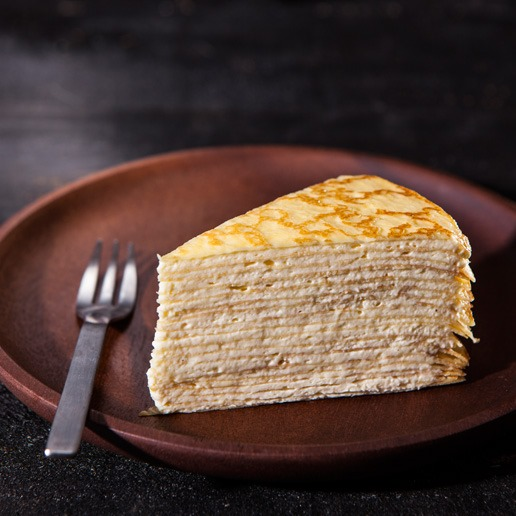

法式千層蛋糕介紹

法式千層酥（法語：mille-feuille，又稱拿破崙酥、拿破崙蛋糕）是一種法國起源的蛋漿甜品，
傳統上，法式千層酥是由三層酥皮夾兩層奶油，但有時也用果醬，頂部通常是交替的白色（糖製成）和棕色條（巧克力製成），
法文「mille-feuille」解作「千層」，中文名稱「拿破崙蛋糕」源自英文名稱「Napoleon」（英國）及
「Napoleon Slice」（加拿大）；本來是法文中把義大利那不勒斯作為形容詞的，
「Napolitain」解作用義大利方式（製作的糕點），
後來被誤解為法國皇帝拿破崙（一世）的名稱，實際上和拿破崙無關。
甜點製作教學